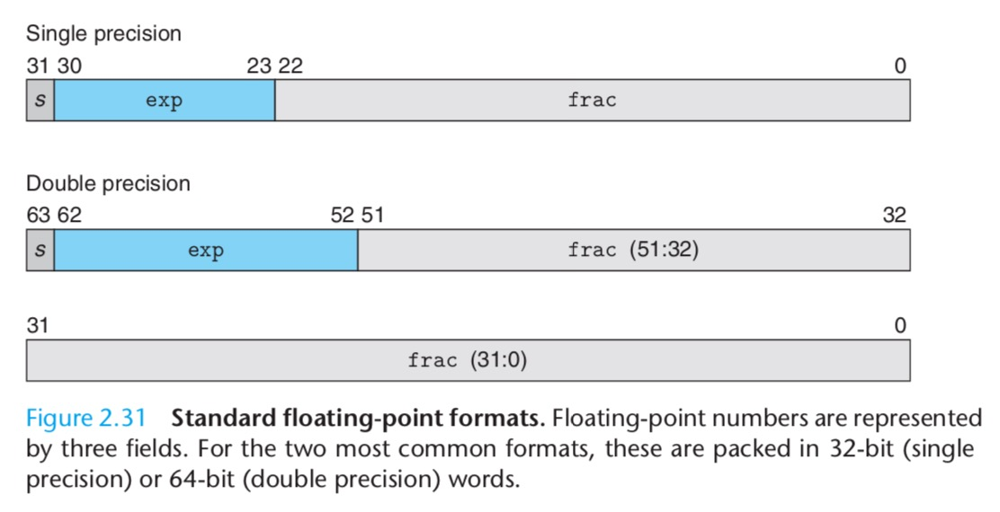
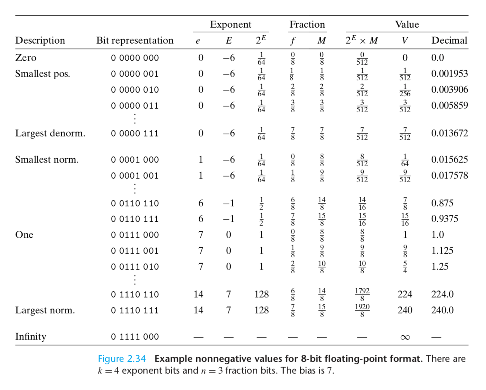
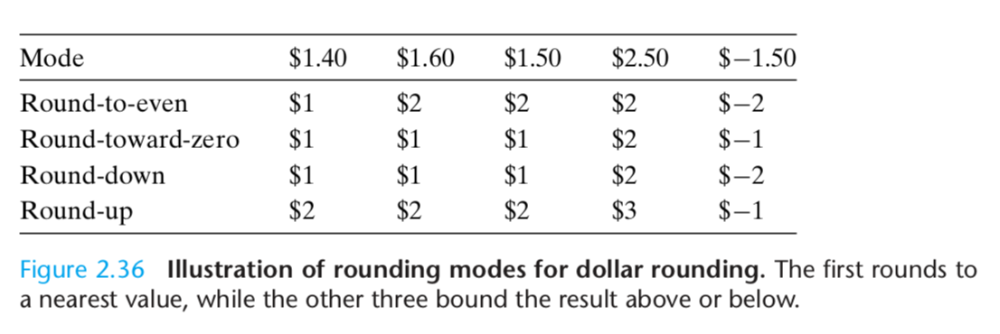
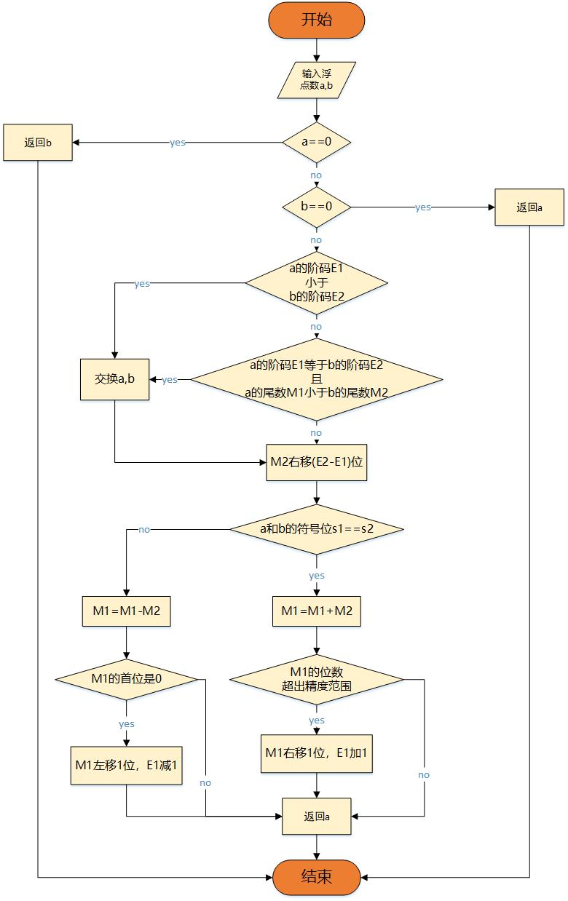

浮点数的作用：区别于整形数，用来表示小数。可以用来表示很大的数，或者非常接近0的小数，或者近似的做实数计算，浮点数的一般形式：$x\times 2^y$。
IEEE（pronounced “Eye-Triple-Eee”）浮点数标准 是行业内公认的标准。
rounding：when a number cannot be represented exactly in the format and hence must be adjusted upward or downward。可以翻译为：舍入。
十进制的小数表示：$d_m d_{m-1} \cdots d_1 d_0 . d_{-1} d_{-2} \cdots d_{-n}$，写成数学表达式：
$$
d = \sum_{i=-n}^m 10^i \times d_i
$$
相应的，二进制也可以写成这种形式：
$$
b = \sum_{i=-n}^m 2^i \times b_i
$$
浮点数的表示
IEEE浮点数的格式：$V = (-1)^s \times M \times 2^E$
- s是符号（Sign），s为0时是正，s为1时是负
- M是有效数字（Significand，即 尾数）
- E是 指数，Exponent，也叫 幂数，阶码
- 隐含的 基数 是 2
下图是浮点数的内存分布模型，首先是符号域，然后是指数域，最后是分数域：

- 符号位s个，符号位只需要一位，s=1
- 指数位k个，指数域 $exp=e_{k-1}\cdots e_1 e_0$，用来计算指数E
- 分数为n个，分数域 $frac=f_{n-1}\cdots f_1 f_0$，用来计算有效数字M
32位浮点数（单精度，float型）中，s=1，k=8，n=23；64位浮点数（双精度，double型）中，s=1，k=11，n=52。
正常化值（Normalized Values）
当 $exp$ 域既不是全0，也不是全1的时候，就是正常化值。
$E = e - Bias$，其中 $e$ 就是 $exp$ 域：$e_{k-1}\cdots e_1e_0$ 的值（除去全0和全1之后，取值范围是1到$2^k-2$），$Bias=2^{k-1}-1$（单精度的时候是127，双精度的时候是1023），那么 $E$ 的取值范围，单精度的时候是：-126 ~ +127，双精度的时候是：-1022 ~ +1023，其实 $E$ 的算法就是 移码 的计算方法。
$M = 1+f$，$0\le f\lt 1$，内存里只记录f，而1作为一个前导值计算时候再加上，所以f是分数域 $frac$ 的 $0.f_{n-1}\cdots f_1f_0$ 这种形式
非正常化值（Denormalized Values）
当指数域全0，就是非正常化格式。
在这种情况下，指数值是 $E = 1-Bias$，也就是固定了，有效数字值 $M = f$ 也就是没有前导1了。这个格式下可以表示0，因为正常化值中，一定有： $M\ge 1$，所以我们无法在正常化值格式下表示0。当符号位是0，有效数字 $M=f=0$，我们得到的就是+0.0，当符号位是1的时候就是-0.0。
除了可以表示0，这个格式的另一个作用就是用来表示非常接近0的数。
特殊值（Special Values）
当指数域全1的时候，且分数域是全0，就表示无穷大，如果符号域为0，表示 $+\infty$，如果符号位是1，则表示 $-\infty$。无穷大可以作为溢出的结果，当我们用两个很大的数相乘，或者除以0；
当指数域全1，且分数域并非全0的时候，结果可以叫做：NaN（Not a Number的简写），这种值用来表示不能用实数或者无穷大表示的计算结果，比如计算：$\sqrt{-1}$ 或者 $\infty - \infty$。
综合理解
下图是三类浮点数在数轴上的显示：

可以看到非正常化值集中在0附近，正常化值散布在整个数轴的空间，特殊值则只表示两个无穷值。
下图是浮点数三种类型的光滑衔接：

看完浮点数的设计和构造我们可以发现以下这些特点：
- 从编码上有效数字域采用了无符号整数编码，而指数域采用了移码编码
- 非正常化值均匀分布在0附近
- 正常化值的间隔随着 $2^E$ 变大而逐渐变大，也就是精度逐渐降低
- 精度是分组的，以 $2^E$ 增加1为一组，每组有 $2^n$ 个数（n是有效数字域的位数）
- 最高精度就是两个非正常化值的间隔，最低精度是最大的一组正常化值的相邻两数的间隔。
- 非正常化值按照精度只占一组，正常化值的数量是非正常化值数量的 $2^{k}-2$ 倍
- 正常化值的第一组的精度和非正常化值的精度一样，也就是实现了无缝衔接
浮点数的计算
舍入

浮点数中使用的是：舍入到最近的偶数，因为舍入结果放大和缩小各占50%的概率，这样就可以防止最终结果偏大或者偏小。
下面是把浮点数舍入到小数点后两位数：
$10.00011_2(2\frac{3}{32})$ -> $10.00_2(2)$ 不到一半，正常四舍五入
$10.00110_2(2\frac{3}{16})$ -> $10.01_2(2\frac{1}{4})$ 超过一半，正常四舍五入
$10.11100_2(2\frac{7}{8})$ -> $11.00_2(3)$ 正好一半，保证最后一位是偶数，所以向上舍入
$10.10100_2(2\frac{5}{8})$ -> $10.10_2(2\frac{1}{2})$ 正好一半，保证最后一位是偶数，所以向下舍入
浮点数加减运算
基本性质
- 相加可能产生 infinity 或者 NaN
- 不满足交换律，不满足结合律（因为舍入会造成精度上的损失）
- 加上0等于原来的数
- 除了 infinity 和 NaN，每个元素都有对应的相反数
- 除了 infinity 和 NaN，满足单调性，即 $a\ge b \rightarrow a+c\ge b+c$
1 |
|
运行结果:
1 | 0 |
具体细节
设两个浮点数 $x$ 和 $y$：
$$
\begin{cases}
x=(-1)^{s_x} M_x 2^{E_x} \
y=(-1)^{s_y} M_y 2^{E_y}
\end{cases}
$$
则浮点数加减运算结果为：
$$
x\pm y = \left((-1)^{s_x}M_x 2^{E_x-E_y} \pm (-1)^{s_y}M_y \right)2^{E_y}
$$
- 对阶：首先要把指数位（阶码）调成一样，并相应的使M移位，由于有效域左移会引起最高有效位丢失，误差大，所以采用右移，此时阶码要增加。所以对阶原则是：小阶向大阶看齐。
- 有效数加减：简单的无符号数字相加减。
- 规格化：有效数求和结果可能大于1，那么就向右规格化：尾数右移1位，阶码加1。
- 舍入：对于右移出去的位，采取舍入
- 检查阶码是否溢出：
- 阶码下溢：运算结果为非规格化数
- 阶码上溢：置溢出标志
浮点数加减实例
$x=3.14, y=2.718$ 求 $z=x+y$。
首先算出 $x$ 和 $y$ 的内存表示：
$x = 3+0.14$，3的二进制表示是11，0.14的二进制要稍微计算一下，我们让0.14不断的乘以2（也就是左移），得到的整数位部分就是其二进制值的一位：
1 | 0.14 * 2 = 0.28 0 |
我们可以写个程序来完成这个计算工作：
1 |
|
上面代码保存成：float2Bitset.cpp文件，然后编译，并使用：
1 | $ g++ -o float2Bitset float2Bitset.cpp |
小数位精确到23位的话，3.14的定点浮点数表示是：11.00100011110101110000101。
转成浮点数，首先规格化M，那么整体要右移1位，指数是1，由 $E = e-Bias$，$E=1$, $Bias=127$ 得 $e=128$，也就是：1000 0000。
最终3.14的内存表示是：
$$
\underbrace{0}_{Sign}~\underbrace{10000000}_{Exponent}~~\underbrace{10010001111010111000011}_{Significand}
$$
同样的方法得到2.718的内存表示：
$$
\underbrace{0}_{Sign}~\underbrace{10000000}_{Exponent}~~\underbrace{01011011111001110110110}_{Significand}
$$
这两个数恰好是同阶的，那么就不需要对阶操作了。将M相加，但这个数太长了看着眼花，我们写个加法程序：
1 |
|
上述代码保存成：addBitset.cpp，编译并使用该程序：
1 | $ g++ -o addBitset addBitset.cpp |
相加结果等于：0 11101101110100101111001，最高位没有产生进位，这里用了一个0来代替，但两个前导1相加产生了进位，所以还需要对M右归一下，再对指数加1。所以加法结果的浮点数表示是：
$$
\underbrace{0}_{Sign}~\underbrace{10000001}_{Exponent}~~\underbrace{01110110111010010111101}_{Significand}
$$
这个数的十进制表示的计算方法是：$$2^2 \times (1+0\times (\frac{1}{2})^1 + 1\times (\frac{1}{2})^2 + 1\times (\frac{1}{2})^3 +1\times (\frac{1}{2})^4+0\times(\frac{1}{2})^5+\cdots)$$
我们依然采用程序来计算这一长串二进制对应的十进制小数：
1 |
|
上述代码保存为：Bitset2float.cpp，编译并执行：
1 | $ g++ -o Bitset2float Bitset2float.cpp |
对得到结果：0.4645，$1.4645\times 2^2 = 5.858$，而 $3.14+2.718=5.858$，这就说明我们的计算无误。
算法流程图

这个流程图并不是完美的，真实的浮点数流程图和浮点数计算电路比这个复杂。另外我忘画了一个东西，这个图最后应该加上溢出处理模块，E可能会上溢（当E加1的时候），也可能会下溢（当E减1的时候）。
最后这个流程图中没有对特殊值的判断，比如：$\infty - \infty = NaN$, $\infty + \infty = \infty$, $NaN + 任何数 = NaN$。
了解了浮点数加法的流程之后，最后我们回到最上面说的 浮点数加减法不满足交换律和结合律，从计算细节分析为什么不行。
首先 3.14 的浮点数表示我们已经计算过了，那么 1e20 的浮点数是多少呢？1e20也就是 $10^{20}$，用辗转相除法可以得到其二进制表示。我们这里使用计算器工具

很遗憾的是64bit只能摆的下 $10^{19}$。我试了一下把源程序中的 1e20 换成 1e19 也是同样的结果。所以我们就使用 1e19 来分析这道题。
首先是M规格化，M右移63位，E加63，舍入M，那么 1e19 最终的双精度浮点数表示是：0 10000111110 0001010110001110010001100000100100010011110100000000
小阶向大阶看齐，3.14的阶是1，M需要右移62位，而M的精度才52，可想而知M就是0了。那么 3.14 + 1e19 的结果就是 1e19。1e20就更加不用说了。
浮点数乘除
基本性质
- 相乘可能产生 infinity 或者 NaN
- 不满足交换律，结合律，分配率（因为溢出会造成程序无法计算出正确的结果）
- 乘以1会等于原来的数
- 除了 infinity 和 NaN，满足单调性：$a\ge b \rightarrow a\times c \ge b \times c$
具体细节
设两个浮点数 $x$ 和 $y$ ：
$$
\begin{cases}
x = \pm M_x 2^{E_x} \
y = \pm M_y 2^{E_y}
\end{cases}
$$
则浮点数乘除运算结果是：
$$
xy = \pm (M_x\times M_y)2^{E_x\pm E_y}
$$
- 计算阶码，判断是否溢出
- 求有效数的乘积
- 有效数舍入
- 计算符号位
浮点数还有相当多的细节，可以参考：IEEE 754